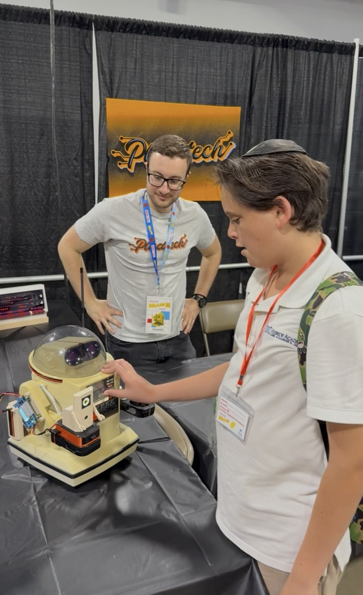

What I learned at Maker Faire Miami: the robot was fine. The internet wasn't.
In Part 4, the Omnibot/Ring-O stack was Faire-ready. The robot would approach a person, say "I found it," and entertain kids.
It performed exactly as planned, for about an hour.
Then a kid tapped What Do You See?
And nothing happened.
The dashboard sat there. The eye blinked. Fifteen seconds passed. The kid wandered away. Then, finally, the robot said something like "I can see 3 things: person, chair, laptop." By then nobody was listening.
This post is about what went wrong and the fifty-line fix that's now in v1.1.0.

The setup
Maker Faire Miami uses the convention center's public WiFi for vendors. It is, generously, "best effort." Hundreds of devices, lots of HTTPS streams, intermittent everything. My setup is the standard kit:
- Pi 5 with Ring-O on top of the Omnibot, on a dolly
- iPad on a stand running the kids dashboard at
https://omniai.local:8080/kids - A small monitor showing the operator dashboard with the live detection feed
The autonomous behavior was rock solid. Detection runs on the IMX500 itself; navigation is pure math; motor commands go over Bluetooth from the Pi to the Omnibot's chest speaker. None of that touches the internet. Kid presses Find Human; the robot turns toward them, rolls over, and stops at conversational distance. "I found it." The crowd loves it.
The problem was the one feature I was secretly proudest of: the robot describing what it sees, out loud, in natural language.
What that button was doing
The What Do You See? button on the kids dashboard sends the current YOLO detections to Groq's hosted Llama 3.3 70B with a prompt like "You are a robot. Say what you see in under 10 words." The model returns something like "Person and laptop in the room"; the Pi runs that through espeak, and the robot says it.
When it works, it's the most personal-feeling part of the whole demo. It's the difference between a list of object labels and a robot that talks to you.
The relevant code, simplified, looked like this:
api_key = os.environ.get('GROQ_API_KEY')
if api_key:
try:
resp = requests.post(
"https://api.groq.com/openai/v1/chat/completions",
json=payload,
timeout=15,
)
description = resp.json()['choices'][0]['message']['content']
except Exception as e:
print(f"Groq error: {e}")
if not description:
# fallback: just join the labels
description = f"I can see {n} things: {', '.join(labels)}"Read that timeout again. Fifteen seconds.
I wrote that timeout when my home WiFi takes ~120 ms to reach Groq. I wrote it on a couch. I never tested what happens when the WiFi can't reach Groq, when the TCP connection itself stalls and just sits there, waiting for the kernel to give up.
At the Faire, that's exactly what happened. The convention's WiFi was so bad that connections to api.groq.com were being blackholed. The HTTP client wasn't getting an error. It was getting nothing. Fifteen full seconds of nothing.
In dashboard time, that's an eternity. The Flask request thread is blocked the whole time. The button looks dead. The kid taps it again; now there are two of them blocked. The eye on Ring-O is still blinking happily because the autonomous loop is running on a different thread, but the kids' dashboard is frozen.
By the time the timeout finally fires and the local fallback speaks, the kid is at the next booth.
Why I missed it
Three reasons, in increasing order of embarrassment:
- My fallback existed and worked. Three lines below the Groq call, there was a perfectly fine
"I can see 3 things: person, laptop, chair"fallback. I knew the LLM might fail, so I wrote one. I just didn't think about the time it took to get to the fallback. - I tested without internet at home, but with my home router off. That's a different failure mode. The router refuses the connection immediately.
requests.postraisesConnectionErrorin milliseconds and falls through to the fallback. Looks like it works. Doesn't. - I had no model of what "the WiFi is bad" actually feels like to a TCP socket. "Bad WiFi" means packets get dropped. TCP retransmits. The retransmissions also get dropped. The kernel waits. There's no error to catch. There's just silence until your timeout kicks in.
The lesson, and this took the Faire to teach me, is that a long timeout is not graceful degradation. A long timeout is just a long failure.
The fix
Two changes, one local file. About fifty lines.
Change 1: A background internet probe
Instead of finding out the internet is down by trying to use the internet, I now have a thread that quietly checks every fifteen seconds:
def _poll_internet_once():
try:
s = socket.create_connection(("1.1.1.1", 53), timeout=1.5)
s.close()
return True
except Exception:
return FalseThat's it. A TCP connect to Cloudflare's DNS port. No DNS lookup (the IP is hardcoded), no payload, no actual data. Just "can I open a socket?" If it succeeds in 1.5 seconds or less, we have internet. If it fails or times out, we don't.
The result is cached in a global flag, refreshed every 15 seconds:
internet_cache = {'alive': False, 'updated_at': 0.0}
INTERNET_POLL_INTERVAL = 15.0This pattern already existed in the codebase for Bluetooth status. A kid mashing the dashboard buttons should never block on bluetoothctl either. I just stole the same shape.
Change 2: Read the flag before calling Groq
with internet_cache_lock:
net_alive = internet_cache['alive']
if api_key and net_alive:
# try Groq
...
else:
# skip straight to the local fallback
...When the probe says offline, we don't even attempt the Groq call. Local fallback fires immediately. The kid taps the button, hears "I can see 3 things: person, laptop, chair" in under 200 ms, and is delighted.
Change 3: Tighten the timeout
The 15-second timeout is now 3 seconds. That's the safety net for a hairline case where the probe reports "alive," but the actual API request still takes too long. Three seconds is roughly long enough that a healthy Groq call (~1 second on good WiFi) doesn't get cut off, but short enough that a frozen call doesn't stall the dashboard meaningfully.
What this looks like to a kid now
| Scenario | Before | After |
|---|---|---|
| Internet up, Groq healthy | Natural sentence in ~1 s | Same |
| Internet up, Groq slow | UI freezes 15 s, then local fallback | UI freezes ≤3 s, then local fallback |
| WiFi dead at the Faire | UI freezes 15 s, then local fallback | Instant local fallback |
| First few seconds of boot | n/a | Tentative Groq call with 3 s cap |
The third row is the one that actually mattered. That's the row that sent kids walking away.
The other slowness: the robot itself
The WiFi/Groq issue was the headline, but it wasn't the only thing that felt slow at the Faire. A few times, a kid would tap Find Human, the robot would start turning to face them, and they'd say "why is it taking so long?" even though the autonomous loop was working perfectly.
It wasn't the network. It was the robot.
With Bluetooth-audio-tone motor control, each command is a sound that must finish before the next starts. A forward step: 500 ms. A full turn: 750 ms. While moving, it can't act on new detections.
So if a kid walks left while Ring-O is mid-turn-right, you can see the robot finish the right turn before it notices and corrects. To an adult, that's "the robot is committed to its decision; it'll catch up." To a six-year-old, that's "the robot is broken."
The fix here wasn't to break the model. The audio-tone protocol is the protocol. You can't shorten the tone past about 100 ms or the Omnibot's relay misses it entirely (I know, I tried). The fix was to make the durations tunable without redeploying:
{
"step_duration": 500,
"turn_duration": 750,
"nudge_duration": 300
}These three keys are now in config.json. Edit them on the Pi, restart the service, and watch how it reacts. For the next event, I'll start at 350 / 500 / 200, about 30% smaller bites, so the robot re-evaluates more often. The trade-off is that each individual movement is shorter, so it issues more of them to cover the same ground. The kid sees a robot that's constantly micro-adjusting toward them rather than committing to a long arc and finishing it before noticing they moved.
# robot_executor.py — clamped server-side so a typo can't break the relay
self.step_duration = max(100, min(2000, int(step_duration)))
self.turn_duration = max(100, min(3000, int(turn_duration)))
self.nudge_duration = max(100, min(2000, int(nudge_duration)))This one was 39287e6. Smaller change than the WiFi fix. About ten lines, plus the new entries in config.json and a README note. The point of putting it in config is that I don't want to have to make a code change at the Faire to find out whether the robot feels snappier at 300 ms steps or 400 ms steps. I want to edit a number, restart the service, and see.
The bigger lesson
The autonomous behavior worked at the Faire. The robot could see, decide, and move. But what I learned is that for public demos, responsiveness matters as much as correctness: people remember how quickly something reacts, not just what it does.
In one case, the answer eventually came, but it felt like an eternity because a cloud dependency hung without erroring. In the other, the answer came on time but felt sluggish, because the robot was committed to a half-second physical action before it could consider new input.
Both are slowness, but they're different shapes:
| Symptom | Root cause | Fix shape |
|---|---|---|
| What Do You See? froze 15 seconds | Cloud LLM hanging silently with no offline detection | Background internet probe + skip-when-offline + 3 s timeout |
| Robot took too long to react to a moving kid | Audio-tone duration is the dispatch interval | Move durations to config.json, tune at the venue without code changes |
If I could give one piece of advice to anyone building a demo for a public event:
Every feature that talks to the internet needs to know whether the internet is currently a thing. If it doesn't, your demo's slowest part is your network's worst day.
This isn't a Pi or a robot or even a Maker Faire-specific lesson. It's the same lesson you learn the first time a backend service you depend on goes down, and your frontend hangs because nobody set a timeout. Just, for me, this time it was happening in front of a six-year-old.
What's next
Both fixes are in main. The robot is going back to the Faire. The autonomous behavior is unchanged because it never needed changing. It just needed two things around it to stop standing in its way.
- WiFi handling:
5cf4a1d, about sixty lines. Adds the background internet probe and the skip-when-offline path on the describe endpoint. - Movement tuning:
39287e6, about ten lines plus the newconfig.jsonkeys, so I can dial the robot's snappiness at the venue without redeploying code.
Next time a kid presses What Do You See? on bad WiFi, Ring-O will instantly say something. Maybe not as poetic as "Person and laptop in the room", but he won't go quiet. And next time a kid moves while the robot is mid-turn, I can adjust how long that turn is in fifteen seconds, on the dolly, in the middle of the show floor.
The code is at github.com/MarioCruz/omnibotAi.
The robot is fine. It was the things around it I hadn't given enough room to fail.
Postscript: the third WiFi problem
Added weeks later, prepping the robot for its next outing.
WiFi bit me a third time, and this one had nothing to do with Groq or timeouts.
The robot kept vanishing. I'd open https://omniai.local:8080 and the page wouldn't load. SSH would hang. ping omniai.local returned "cannot resolve." Thirty seconds later, fine again. It looked exactly like the Pi was crash-looping, and I spent a while convinced I had a hardware fault: under-voltage, overheating, a dying SD card. Checked all of them. throttled=0x0. 49 °C. Disk fine. No kernel panic. The robot was, once again, completely fine.
The tell was in the boot log:
brcmfmac: brcmf_cfg80211_set_power_mgmt: power save enabledWiFi power-save. By default, the Pi's WiFi radio is allowed to doze between packets to save power. On a phone, that's great. On a headless robot you only ever reach over the network, it means the radio periodically naps and is slow, or just fails, to answer mDNS, pings, and SSH, then wakes up and acts as if nothing happened. The robot wasn't down. Its radio was asleep.
Same lesson as the rest of this post, wearing a different hat: the robot is fine; it's the thing around it. Last time, the thing around it was a cloud API with no offline detection. This time it was the robot's own network card optimizing for a battery it doesn't have.
The fix is two lines, one for now, one for forever:
sudo iw dev wlan0 set power_save off # this boot
sudo nmcli connection modify "<wifi>" 802-11-wireless.powersave 2 # every bootThe first disables it live; the second persists it through NetworkManager so it survives reboots. I power-cycled the Pi half a dozen times to confirm WiFi came back every time. It did.
While I was in there, dropping the :8080
One more bit of polish from the same session. Every URL in this series has been https://omniai.local:8080. The port is there because the dashboard runs as a normal user, and only root can bind the friendly ports. I finally fixed that with a tiny redirect service on ports 80/443 that forwards to :8080, so the iPad on the stand can just point at https://omniai.local. Small thing, the kind of papercut you stop noticing until you watch a kid try to type a port number.
Both of these, plus a pile of cleanup (the dashboard's HTML/CSS/JS finally split out of the Python, a real test suite, optional API auth, a boot screen that shows the robot's IP), are tagged v1.1.5. And the README's troubleshooting section now has the power-save fix written down, because the next person to watch this robot "crash-loop" is probably me, a year from now, and I'd like to lose that afternoon only once.
The Omnibot restoration series:
- Part 1: Hardware restoration
- Part 2: Bluetooth control and voice
- Part 3: AI camera and software stack
- Part 4: It's alive
- Part 5: The WiFi problem (this post)
All code: github.com/MarioCruz/omnibotAi